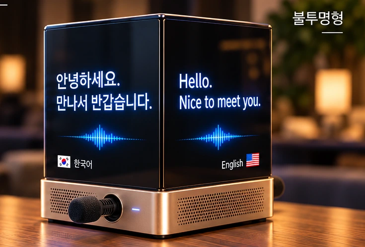

70개 이상 언어 지원 엔진 기반
한국어·영어·중국어·일본어·힌디어 등.
서로 다른 언어의 대화를 연결합니다.
시선을 화면 속으로 빼앗기지 않도록.
마주 앉은 두 사람 사이에, AI 통역 큐브.

한국어·영어·중국어·일본어·힌디어 등.
서로 다른 언어의 대화를 연결합니다.
대화의 흐름을 이어가는 실시간 통역.
실제 지연은 발화와 사용 환경에 따라 달라집니다.
글로시 블랙과 샴페인 골드의 조화.
상담 공간에 어울리는 탁상형 큐브 실루엣.
언어 수는 통역 엔진 공식 지원 범위 기준이며 모든 언어 조합의 현장 검증이 완료된 것은 아닙니다. 1초는 성능 보장값이 아닌 개발 목표이며, 외관은 컨셉 이미지 기준입니다.
내가 한 말과 상대방의 말을 구분하고,
각자의 화면에 익숙한 언어로 보여줍니다.
화면 구성 예시입니다. 실제 시연영상은 아래에서 확인할 수 있습니다.
실제 시제품의 통역 과정을 영상으로 확인하세요. 말이 입력되고 번역 자막으로 이어지는 모습을 담았습니다.
재생 버튼을 누르면 음성과 함께 재생됩니다. 인식 정확도와 지연은 주변 소음, 발화 및 네트워크 환경에 따라 달라질 수 있습니다.
내 발화와 상대방의 번역을 구분해, 대화 흐름을 한눈에 따라갈 수 있습니다.
발화자의 마이크와 언어 역할을 설정하고, 입력 상태를 개별적으로 확인합니다.
상대방의 인사말로 언어 설정을 시작하거나, 원하는 언어를 직접 선택합니다.
조용한 상담은 자막으로. 상황에 따라 번역 음성 출력을 켜거나 끌 수 있습니다.
제품을 보여주며, 해외 방문객과 마주 보는 대화.
서로의 질문과 답변을 각자의 언어로 확인하는 상담.
테이블 위에 두고 함께 내용을 따라가는 미팅.
유광 블랙과 샴페인 골드 톤이 어우러진 고급스러운 외관을 지향합니다. 다방향 디스플레이와 테이블 위 설치 구조를 고려한 디자인입니다. 이미지는 개발 컨셉이며, 최종 외관과 구성은 시제품 검증 과정에서 변경될 수 있습니다.
현재 시제품 1대로 실제 전시회에서 시범운영하고 있습니다.
현장의 상담 환경에서 사용성을 검증하며 제품을 개선하고 있습니다.
회사·행사명, 일정, 장소와 사용 환경을 함께 보내주시면 상담에 도움이 됩니다.
버튼을 누르면 문의 방법을 선택할 수 있습니다.